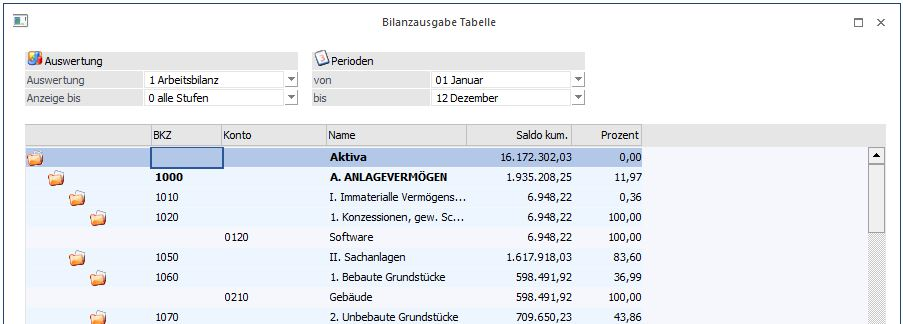
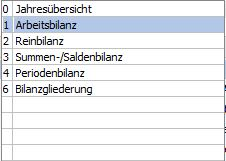
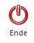

Durch die Anwahl des Ausgabe-Buttons "Ausgabe Tabelle" im Programm "FIBU-Bilanz" wird die zuvor getroffenen Einstellungen in Form einer WinLine Tabelle dargestellt.

Ø Auswertung
Wird die Bilanz als Tabelle ausgegeben, so können nur folgende Auswertungen der Bilanz als Tabelle
ausgegeben werden:

Ø Anzeigen bis
Hier kann ausgewählt werden auf welche Stufe die Gruppierung der Bilanz vorgenommen werden soll.
Ø Perioden von/bis
Es kann die Einschränkung von Periode bis Periode durchgeführt werden.
Buttons

Ø Ende
Mit Hilfe des Buttons "Ende" bzw. der Taste ESC wird das Fenster geschlossen.
Hinweis
Mittels Doppelklick auf ein Konto gelangt man in das Fenster "Buchungen".